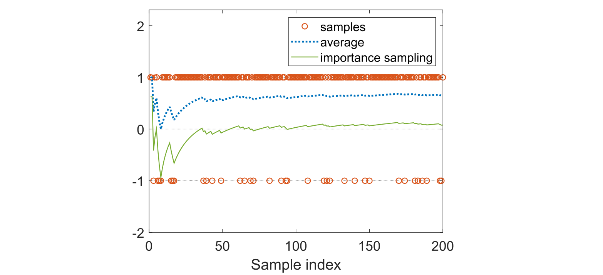
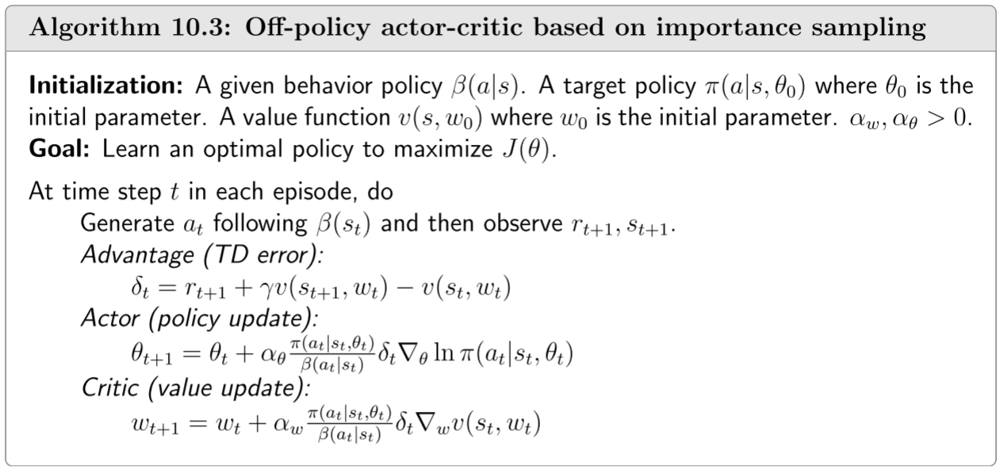

10.3-异策略演员-评论性方法
10.3 异策略演员-评论家算法¶
我们迄今所研究的策略梯度方法，包括REINFORCE、QAC和A2C，都属于同策略(on-policy)方法。这一特点可从真实梯度的表达式中看出:
为了利用样本来近似这一真实梯度，我们必须通过遵循策略 \(\pi(\theta)\)来生成动作样本。因此，\(\pi(\theta)\)即为行为策略。由于 \(\pi(\theta)\)同时也是我们希望改进的目标策略，策略梯度方法属于同策略(on-policy)方法。
在已有由给定行为策略生成的样本的情况下，仍可应用策略梯度方法来利用这些样本。为此，可采用称为重要性采样(importance sampling)的技术。需要指出的是，重要性采样技术并不局限于强化学习领域，而是一种通用技术——其核心在于利用从某一分布抽取的样本来估计定义在另一概率分布上的期望值。
10.3.1 重要性采样¶
Note
重要性采样重点看一下
接下来我们介绍重要性采样技术。考虑一个随机变量\(X \in \mathcal{X}\)，设\(p_0(X)\)为概率分布。我们的目标是估计\(\mathbb{E}_{X\sim p_0}[X]\)。假设已有独立同分布样本\(\{x_i\}_{i=1}^n\)。
-
首先，若样本\(\{x_i\}_{i=1}^n\)服从\(p_0\)分布生成，则其均值\(\bar{x} = \frac{1}{n}\sum_{i=1}^n x_i\)可用于近似\(\mathbb{E}_{X\sim p_0}[X]\)。这是因为\(\bar{x}\)是\(\mathbb{E}_{X\sim p_0}[X]\)的无偏估计量，且当\(n \to \infty\)时估计方差收敛于零(详见Box 5.1中的大数定律)。
-
其次，考虑一个新场景：样本\(\{x_i\}_{i=1}^n\)并非由\(p_0\)生成，而是由另一个分布\(p_1\)生成。我们是否仍能用这些样本来近似\(\mathbb{E}_{X\sim p_0}[X]\)？答案是肯定的。然而，此时无法继续使用\(\bar{x} = \frac{1}{n}\sum_{i=1}^n x_i\)来近似\(\mathbb{E}_{X\sim p_0}[X]\)，因为\(\bar{x} \approx \mathbb{E}_{X\sim p_1}[X]\)而非\(\mathbb{E}_{X\sim p_0}[X]\)。
在第二种情景下，\(E_{X∼p_0}[X]\)可通过重要性采样技术进行近似估计。具体而言，\(E_{X∼p_0}[X]\)满足
因此，估计\(\mathbb{E}_{X\sim p_0}[X]\)转化为估计\(\mathbb{E}_{X\sim p_1}[f(X)]\)的问题。设
由于\(\bar{f}\)能够有效近似\(\mathbb{E}_{X\sim p_1}[f(X)]\)，因此由式\((10.9)\)可得
式\((10.10)\)表明，\(E_{X\sim p_0}[X]\)可通过\(x_i\)的加权平均来近似。其中\(\frac{p_0(x_i)}{p_1(x_i)}\)称为重要性权重。当\(p_1 = p_0\)时，重要性权重为1，此时\(\bar{f}\)退化为\(\bar{x}\)。若\(p_0(x_i) ≥ p_1(x_i)\)，则\(x_i\)在\(p_0\)中的采样频率高于\(p_1\)，此时大于\(1\)的重要性权重将强化该样本的重要性。
部分读者可能会提出以下疑问：既然\((10.10)\)中需要\(p_0(x)\)，为何不直接通过定义\(\mathbb{E}_{X\sim p_0}[X] = \sum_{x\in\mathcal{X}} p_0(x)x\)来计算？原因如下：使用该定义需要已知\(p_0\)的解析表达式，或者对每个\(x \in \mathcal{X}\)都能获取\(p_0(x)\)的值。然而，当概率分布由神经网络等模型表示时，很难获得\(p_0\)的解析表达式；而当\(\mathcal{X}\)空间较大时，也难以获取每个\(x\)对应的\(p_0(x)\)值。相比之下，\((10.10)\)仅需部分样本的\(p_0(x_i)\)值，实际实现起来更为简便。
Note
适用于\(p_0\)无法采样或者连续性函数时
例子¶
接下来我们通过一个示例说明重要性采样技术的应用。设\(X \in \mathcal{X} = \{+1, -1\}\)，并假设\(p_0\)为满足以下条件的概率分布：
\(X\)在\(p_0\)上的期望为
假设\(p_1\)是满足条件的另一个分布
\(X\)在\(p_1\)上的期望为
假设我们有一些从分布 \(p_1\)中抽取的样本\(\{x_i\}\)，目标是利用这些样本估计\(\mathbb{E}_{X\sim p_0}[X]\)。如图\(10.2\)所示，样本中\(+1\)的数量多于\(-1\)，这是因为\(p_1(X=+1)=0.8 > p_1(X=-1)=0.2\)。若直接计算样本均值\(\sum_{i=1}^n x_i/n\)，该值会收敛至\(\mathbb{E}_{X\sim p_1}[X]=0.6\)(见图\(10.2\)虚线)；而通过式\((10.10)\)计算加权平均值时，该值可正确收敛至\(\mathbb{E}_{X\sim p_0}[X]=0\)(见图\(10.2\)实线)。

图\(10.2\)：重要性采样技术的演示示例。此处定义\(X \in \{+1, -1\}\)且\(p_0(X = +1) = p_0(X = -1) =0.5\)。样本根据\(p_1\)分布生成，其中\(p_1(X = +1) =0.8\)，\(p_1(X = -1) =0.2\)。样本均值收敛于\(\mathbb{E}_{X\sim p_1}[X] =0.6\)，但通过式\((10.10)\)重要性采样技术计算的加权均值收敛于\(\mathbb{E}_{X\sim p_0}[X] =0\)。
最后，用于生成样本的分布\(p_1\)必须满足：当\(p_0(x) \neq0\)时，\(p_1(x) \neq0\)。若\(p_1(x) =0\)而\(p_0(x) \neq0\)，则估计结果可能出现问题。例如，若
那么由\(p_1\)生成的样本均为正值：\(\{x_i\} = \{+1, +1, \ldots, +1\}\)。这些样本无法正确估计\(\mathbb{E}_{X\sim p_0}[X] =0\)，因为
无论\(n\)取值多大。
10.3.2 off-policy策略梯度定理¶
借助重要性采样技术，我们得以提出异策略梯度定理。假设\(\beta\)为行为策略，目标是通过\(\beta\)生成的样本来学习目标策略\(\pi\)，使其能最大化以下指标：
J(\theta)=\sum_{s\in\mathcal{S}}d_\beta(s)v_\pi(s)=\mathbb{E}{S\sim d\beta}[v_\pi(S)],
其中\(d_\beta\)为策略\(\beta\)下的稳态分布，\(v_\pi\)为策略\(\pi\)下的状态值。该指标的梯度由以下定理给出。
Info
定理10.1 (off-policy策略梯度定理).在折扣因子\(\gamma\in(0,1)\)的折扣情形下，目标函数\(J(\theta)\)的梯度为
其中状态分布\(\rho\)满足
其中\(Pr^\pi(s|s') = \sum_{k=0}^\infty \gamma^k[P^k_\pi]_{s's} = [(I - \gamma P_\pi)^{-1}]_{s's}\)表示在策略\(\pi\)下从状态\(s'\)转移到状态\(s\)的折扣总概率。
(10.11)式中的梯度与定理9.1的同策略情形相似，但存在两点差异：第一差异在于重要性权重；第二差异在于\(A \sim \beta\)而非\(A \sim \pi\)。因此，我们可以利用通过遵循\(\beta\)来逼近真实梯度生成的动作样本。该定理的证明见Box \(10.2\)。
10.3.3 算法描述¶
基于off-policy策略梯度定理，我们现可推导off-policy策略的演员-评论家算法。由于异策略与同策略高度相似，此处仅展示若干关键步骤。
首先，off-policy策略梯度对于任何附加基线\(b(s)\)都具有不变性。具体而言，我们有
因为\(\mathbb{E}\left[{\frac{\pi(A|S,\theta)}{\beta(A|S)}}\nabla_{\theta}\ln\pi(A|S,\theta)b(S)\right]=0.\)。为降低估计方差，可将基线函数取为\(b(S) = v_\pi(S)\)从而得到
对应的随机梯度上升算法为
其中 \(\alpha_\theta >0\)。与同策略情形类似，优势函数\(q_t(s, a) - v_t(s)\)可替换为时序差分误差(TD error)，即
随后，该算法变为
从而有
Note
与同策略的公式\(\theta_{t+1}=\theta_t+\alpha\underbrace{\left(\frac{\delta_t(s_t,a_t)}{\pi(a_t|s_t,\theta_t)}\right)}_{\mathrm{step~size}}\nabla_\theta\pi(a_t|s_t,\theta_t)\)相比，虽然分子还会改变从而发生与同策略相同的变化，即充分利用，但是可以看到分母是一个固定的值，那么此时也就不存在什么探索。
异策略演员-评论家算法的实现流程总结于算法\(10.3\)中。可以看出，该算法与优势演员-评论家算法基本相同，只是在评论家和演员部分都增加了额外的重要性权重。需要特别注意的是，通过重要性采样技术，不仅演员部分，评论家部分也从同策略转换为异策略。实际上，重要性采样是一种通用技术，可同时应用于基于策略和基于价值的算法。最后，算法\(10.3\)可通过多种方式进行扩展，以整合资格迹(eligibility traces)等更多技术[73]。

算法\(10.3\)：基于重要性采样的off-policy策略演员-评论家方法